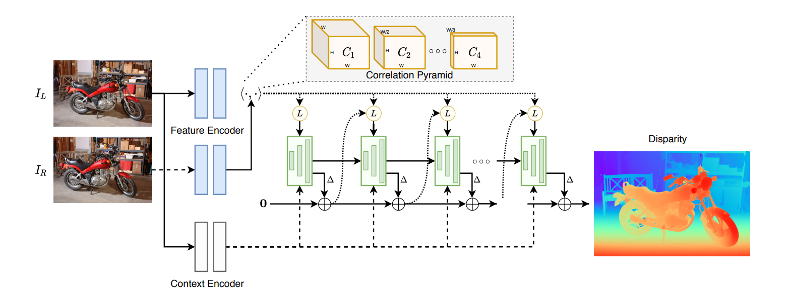
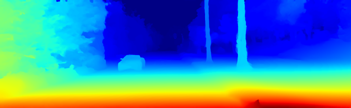
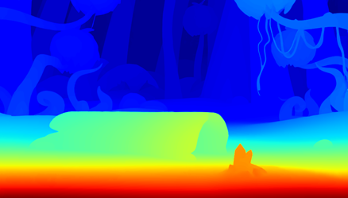

RAFT-Stereo论文笔记
本篇文章是对CVPR2018的一篇光流文章RAFT的拓展应用，将光流匹配问题限制在同一y坐标上。

1.简介
3D卷积在视差估计中占主导地位，但是运算量太大，而光流的迭代修正方法可以用在高分辨率的图像计算上。RAFT-Stereo把RAFT的光流匹配4D volumn变成了视差匹配的3D volumn，在同一y坐标上算像素的相似度。并以不同的速度更新不同分辨率的GRU单元，最终上采样出视差图。以往的视差匹配主要依靠的是3D卷积来形成cost volumn，但是RAFT-Stereo只用了2D卷积和矩阵相乘来形成cost volumn。
2.模型结构
本文的方法主要包含三部分：
- 特征提取
- 相关金字塔
- 基于GRU的更新符
2.1特征提取
特征图和以往方法结构一样，通过残差网络提取特征后进行下采样。但是为了保存一些信息，对左图又单独提取了一份文本特征送入每个GRU单元。这一部分感觉有点魔法，特征图和文本图的结构完全相同，但是特征提取用的是batch normalization,内容提取用的是Instance normali（二者的区别可以参见我的另一篇博客transformer）,可能是为了防止不同图片的特征相差过大，因此对每个图片的特征做单独的归一化。
2.2相关金字塔
2.2.1correlation volumn
correlation pyramid是用向量内积来衡量像素相关度的张量，类似于cost volumn，但是它们的不同点在于：
- correlation pyramid的深度不再是最大深度D，而是图片的宽度。
- 由第一条可以看出，相当于不再存在cost volumn计算时视差恒大于等于0的假设。
- correlation pyramid可以用矩阵乘积直接计算，有利于GPU加速。
其计算公式如下：
这里的代码有一个有趣的Pytorch函数：
2
3
4
5
'''
torch.einsum('aijk,aijh->ajkh',input1,input2)，aijk、aijh分别是input1、input2的大小，
ajkh是输出的大小，该函数会在第i维上求两个张量的内积
'''
2.2.2correlation pyramid
通过生成原始的correlation volumn，在特征维进行一维的大小为2的平均池化，使得新生成的correlation volumn的特征通道数越来越少，感受域越来越广，但是原图分辨率不变，从而可以可以得到比较好的对信息的维护，将这些不同深度的correlation volumn作为GRU单元的输入。
2.2.3 correlation Lookup
本文在查找某一位置、某一视差下两个像素的匹配度时，是对整个correlation pyramid的不同层级的correlation volumn都进行了采样并插值，如下图：
给定一个搜索半径r，将每个correalation volumn的对应视差处的$[-r,r]$范围的相关值提取出来并concat在一起。这里代码在实现时，与文章描述的略有不同。代码在实现时，确实在当前视差处的前后各取了r个值，但是是从$[0,w]$的两端开始均匀插值后进行取值，而不是直接去前后离散的相挨的值。
这里对Pytorch的双线性插值函数进行简短的讲解：
2
3
4
5
6
7
8
9
10
11
12
13
14
15
16
F.grid_sample(input,grid,align_corners=True)
'''
input输入为(N*C*Hi*Wi),grid输入为(N*Ho*Wo*2)且其值在[-1,1],输出为(N*C*Ho*Wo),
grid坐标值为(x_ho,y_wo)的点x_Ho对应Wi，y_wo对应Hi，插值时先计算Wi维度上的插值，再计算H维度上的插值。
grid生成方法如下：
'''
d1=torch.linspace(-1,1,n1) #归一化到[-1,1]
d2=torch.linspace(-1,1,n2) #归一化到[-1,1]
meshx,meshy=torch.meshgrid((d1,d2))
'''
输入的tensor1、2必须是一维的，输出两个tensor，其行数为第一个tensor的维数，其列数为第二个tensor的维数，
第一个输出张量为第一个输入张量按列重复；第二个输出张量为第二个输入张量按行重复
'''
grid=torch.stack((meshy,meshx),2)
grid=grid.unsqueeze(0)
2.3多级更新GRU
RAFT的GRU单元一直在最高分辨率下操作，导致感受域扩大的太慢。RAFT-Stereo通过耦合不同分辨率的视差和特征，扩大了感受域。由于RAFT的视差预测是在1/4和1/8分辨率下进行的，通过3*3的加权卷积把视差上采样回原分辨率。在1/8分辨率下训练GRU是1/16分辨率所需时间的4倍，本文在训练一次1/8的GRU时会训练2次1/16和3次1/32的GRU。结果表明速度提升很明显。
2.4loss
最基本的L1loss加权：
3.实验结果
由于我目前对光流问题了解有限，代码实现中涉及到一些光流网络的构建部分还没有理解透彻，因此只完成了模型主体的构建部分，等以后进一步了解光流问题后再回头来完整复现（挖个坑），这次利用作者预训练的模型检验了结果：
|  |  |
4.Reference
RAFT-Stereo: Multilevel Recurrent Field Transforms for Stereo Matching,Lahav Lipson, Zachary Teed, Jia Deng, arXiv:2109.07547